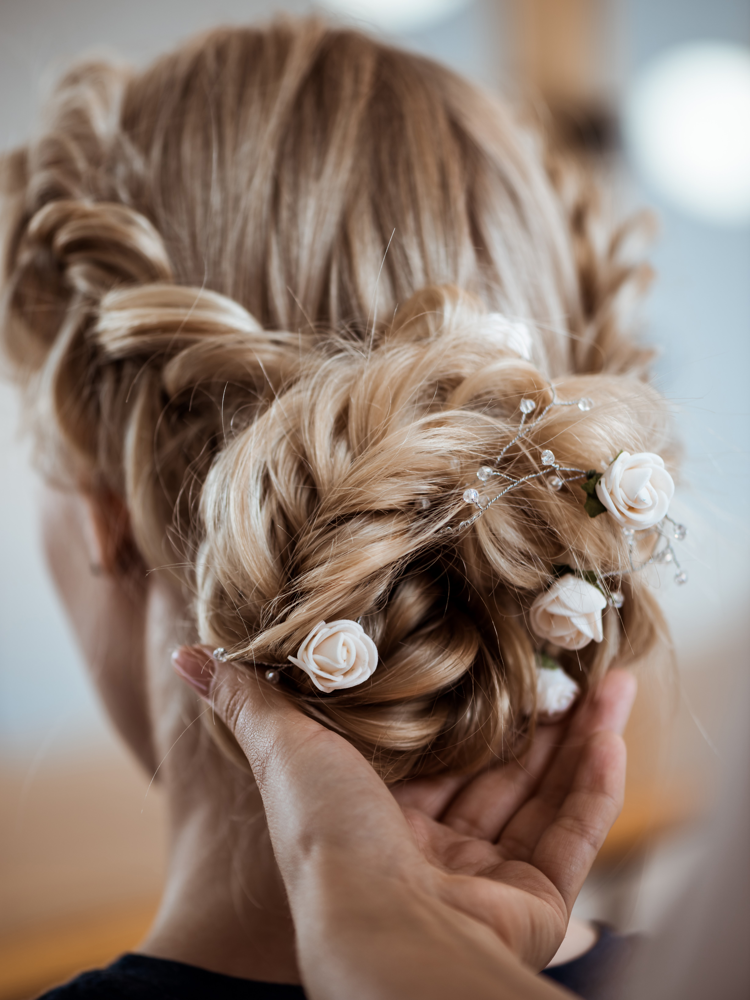

Agata
Każde spotkanie przy fotelu z Agatą to indywidualne dążenie do perfekcji. Najlepiej czuje się w koloryzacjach włosów. Dba o to, aby każda klientka czuła się w swoich włosach po prostu sobą. Stawia na modny, ale naturalny efekt koloryzacji i zdrowe włosy.
